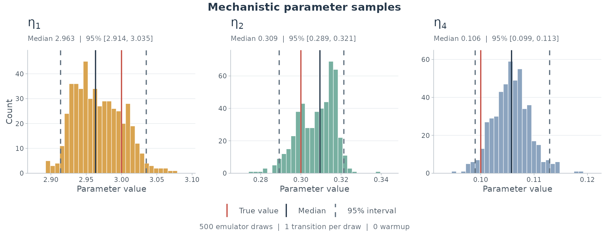
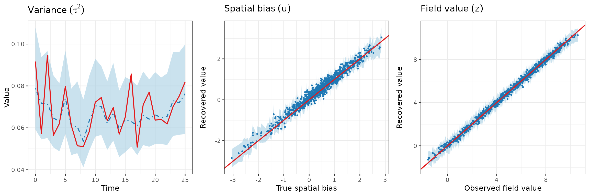

From saved SIR simulations to field-data calibration
Source:vignettes/calibration.Rmd
calibration.RmdThis example follows the calibration model in Sections 6 and 7.2 of Banerjee, Chen, Frankenburg and Zhou (2025), Dynamic Bayesian Learning for Spatiotemporal Mechanistic Models. It trains an emulator from saved SIR simulations and calibrates its mechanistic parameters to noisy field observations. No PDE solver is called.
Here we use 500 emulator draws and one calibration iteration per draw. The package defaults to smoothed-marginal emulator sampling; the number of calibration iterations has no default. This example sets the number of emulator draws to 500 and the iterations per draw to one. The plots show eta histograms and a variance/discrepancy/field panel. One transition per conditional is an execution experiment; its sample quantiles do not establish converged posterior uncertainty.
The example uses the scalar spatial covariance model, . The package’s inverse-Wishart emulation default is a separate model and cannot be passed directly to this initial calibration implementation.
Load simulations and observations
library(spDBL)
data("dt_calibration", package = "spDBL")
d <- dt_calibration
dim(d$training$input)
#> [1] 40 5
dim(d$training$responses[[1]])
#> [1] 40 36
range(d$time)
#> [1] 0 25There are 40 training and ten held-out simulator runs, a 6 by 6 grid, and 26 observations including time zero. Responses and field observations are on the scale. The separate example in the emulation vignette has different grid dimensions and parameter bounds; use the bounds supplied with each dataset.
Fit the dynamic emulator
n_emulator <- 500L
em <- emulator_learn(
d$training$input, d$training$responses, d$Nx, d$Ny,
covariance = "sigma2R", episode_window = 2,
nsam = n_emulator, seed = 1234
)
cal <- calibration_prepare(em, d$lower, d$upper)
stopifnot(identical(cal$sampling_method, "marginal"),
isFALSE(cal$posterior$joint_trajectories))
c(times = cal$T, locations = cal$S, episodes = cal$E, draws = cal$M)
#> times locations episodes draws
#> 26 36 78 500The default sampling method follows the smoothed-marginal procedure in equation (9) and Algorithm 4 of the paper. Coefficients at each episode use its smoothed mean and covariance, conditional on a shared variance draw. These samples retain each episode’s marginal posterior; they do not represent joint coefficient paths. The filtering results and kernels are retained so additional samples can be drawn without refitting:
cal_more <- calibration_prepare(em, d$lower, d$upper,
n_draws = 1000, seed = 1235)To preserve dependence across episode coefficients, select joint sampling. Preparation resamples the existing number of draws from the saved filter; training the dynamic emulator again is unnecessary.
cal_joint <- calibration_prepare(em, d$lower, d$upper, sampling = "joint")
# Alternatively, specify sampling = "joint" in emulator_learn().Predict without new PDE trajectories
An offline GP predicts the autoregressive design rows at proposed mechanistic inputs. The existing FFBS predictor then combines those rows with a fixed set of emulator coefficients and a GP residual correction. Episode recovery restores the original spatial order.
predicted <- emulator_predict(cal, d$validation$input)
dim(predicted[[1]])
#> [1] 10 36
validation <- calibration_validate(
cal, d$validation$input, d$validation$responses
)
validation$field
#> input rmse_known_design rmse_offline_design
#> 1 1 0.06650061 0.16073522
#> 2 2 0.02756417 0.03434093
#> 3 3 0.03660726 0.06967406
#> 4 4 0.06859696 0.41605234
#> 5 5 0.15726734 0.23956698
#> 6 6 0.06996103 0.69473847
#> 7 7 0.06999722 0.08605065
#> 8 8 0.02153760 0.07336719
#> 9 9 0.19534522 0.47324560
#> 10 10 0.01640373 0.01739381The validation report compares field means using known held-out AR
rows with means using GP-predicted rows. Held-out responses are used for
this check only. Calibration itself receives neither held-out
trajectories nor synthetic truth. The validation report compares means
only. For calibration, the design GP’s predictive covariance is
propagated into the field covariance, together with the emulator’s
coefficient and conditional predictive uncertainty
(vignette("calibration-details") gives the formulas).
Prepare field observations
Use all 36 locations in their original grid order. The order of these indices must match the columns of the observation matrix.
sites <- seq_len(cal$S)
z <- d$field$z[, sites, drop = FALSE]
dim(z)
#> [1] 26 36
range(diag(d$field$U))
#> [1] 1 1The full-grid discrepancy correlation matrix U has unit diagonal. It controls the discrepancy increments and is distinct from the emulator spatial covariance. Observation noise is independent across locations conditional on its variance.
One iteration for each emulator draw
The following command fixes each indexed set of emulator coefficients and runs one NUTS transition, with one chain and zero warmup. It retains one calibration sample per emulator draw, giving 500 equally weighted samples. Discrepancy states are integrated out by a Kalman filter and recovered afterward.
fit <- calibration_fit(
cal, z, U = d$field$U, locations = sites,
iter = 1, seed = 1237, refresh = 0, init = "midpoint"
)
summary(fit)iter must always be given. With iter = 1,
the other sampling arguments default to chains = 1, warmup = 0, and
draws_per_emulator = 1. With zero warmup, adaptation is disabled and the
default step size is 0.001. The default marginal Stan program integrates
out discrepancy states; this is separate from the marginal sampling of
emulator coefficients.
Longer calibration runs remain available. With a larger iter and no explicit warmup, half the iterations are used for warmup. Positive warmup enables the default adaptation controls. Specify all counts when reproducing an analysis:
fit_long <- calibration_fit(
cal_joint, z, U = d$field$U, locations = sites,
chains = 4, iter = 2000, warmup = 1000,
draws_per_emulator = 200, seed = 1237
)This recorded execution experiment starts each conditional fit at the
midpoint of the parameter bounds (init = "midpoint") and at
precision n0/d0; it does not continue a chain from the preceding
emulator draw. In this synthetic example the midpoint also equals the
true eta, so the close agreement after one iteration comes from the
initialization, not from inference. The default,
init = "mode", starts the chains at the best of 20 local
optima of the conditional posterior; init = "random" starts
each chain at a random point within the bounds, which lets Rhat reveal
chains that settle in different modes; a vector of parameter values can
also be given. Rhat and effective sample size are unavailable for these
one-transition conditionals.
Sampling requires the optional RStan package and a working C++ toolchain at first compilation. Compiled models are cached in a user directory. No Stan compilation or sampling is performed while building this vignette. The following chunks use recorded samples and pointwise field quantiles from an actual oneiter500 run. This compact record omits the full fitted emulator and raw field arrays; the reproduction script saves the complete objects.
recorded <- readRDS(system.file(
"extdata", "calibration-example.rds", package = "spDBL", mustWork = TRUE
))
samples <- recorded$samples
stopifnot(recorded$provenance$profile == "oneiter500",
identical(recorded$locations, sites),
identical(recorded$provenance$emulator_sampling_method, "marginal"),
isFALSE(recorded$provenance$joint_trajectories),
isTRUE(recorded$provenance$design_uncertainty))
data.frame(
emulator_draws = length(unique(samples$emulator_draw)),
chains_per_draw = recorded$settings$chains,
iterations_per_chain = recorded$settings$iter,
warmup = recorded$settings$warmup,
retained_samples = nrow(samples$mcmc_eta),
observed_sites = length(recorded$locations),
emulator_sampling = recorded$provenance$emulator_sampling_method
)
#> emulator_draws chains_per_draw iterations_per_chain warmup retained_samples
#> 1 500 1 1 0 500
#> observed_sites emulator_sampling
#> 1 36 marginalEta histograms
Show the three free parameters, eta 1, eta 2, and eta 4 (alpha2). Eta 3 and eta 5 are fixed at zero by their bounds. Each horizontal axis spans all retained samples and the synthetic truth, with a little padding to make the distribution visible. Red marks truth, a dark solid line marks the median, and dashed lines mark the 2.5% and 97.5% sample quantiles. These quantiles summarize the one-transition outputs.
library(ggplot2)
active <- which(d$upper > d$lower)
eta_quantiles <- apply(samples$mcmc_eta, 2, quantile, c(0.025, 0.5, 0.975))
hist_colors <- c("#D9A450", "#78B0A1", "#8CA4BF")
line_colors <- c("True value" = "#C44D42", "Median" = "#26384A",
"95% interval" = "#637381")
line_types <- c("True value" = "solid", "Median" = "solid",
"95% interval" = "dashed")
eta_plots <- lapply(seq_along(active), function(k) {
j <- active[k]
values <- samples$mcmc_eta[, j]
q <- eta_quantiles[, j]
span <- range(c(values, d$truth$eta[j]))
padding <- max(diff(span) * 0.1, (d$upper[j] - d$lower[j]) * 0.005)
limits <- c(max(d$lower[j], span[1] - padding),
min(d$upper[j], span[2] + padding))
references <- data.frame(
value = c(q[1], q[3], q[2], d$truth$eta[j]),
reference = factor(c("95% interval", "95% interval", "Median", "True value"),
levels = names(line_colors))
)
ggplot(data.frame(value = values), aes(x = value)) +
geom_histogram(bins = 28, fill = hist_colors[k],
color = "white", linewidth = 0.25) +
geom_vline(data = references,
aes(xintercept = value, color = reference, linetype = reference),
linewidth = 0.75, show.legend = TRUE) +
scale_color_manual(values = line_colors, name = NULL, drop = FALSE) +
scale_linetype_manual(values = line_types, name = NULL, drop = FALSE) +
scale_x_continuous(breaks = scales::breaks_extended(n = 5),
labels = scales::label_number()) +
scale_y_continuous(breaks = scales::breaks_pretty(n = 4),
expand = expansion(mult = c(0, 0.1))) +
coord_cartesian(xlim = limits) +
labs(title = bquote(eta[.(j)]),
subtitle = sprintf("Median %.3f | 95%% [%.3f, %.3f]", q[2], q[1], q[3]),
x = "Parameter value", y = if (k == 1) "Count" else NULL) +
theme_classic(base_size = 11) +
theme(
plot.title = element_text(size = 16, color = "#26384A"),
plot.subtitle = element_text(size = 9, color = "#5D6975",
margin = margin(b = 10)),
axis.title = element_text(color = "#44515D"),
axis.text = element_text(color = "#44515D"),
axis.line = element_line(color = "#AEB8C0", linewidth = 0.3),
axis.ticks = element_line(color = "#AEB8C0", linewidth = 0.3),
panel.grid.major.y = element_line(color = "#E8ECEF", linewidth = 0.35),
legend.position = "bottom",
legend.text = element_text(size = 10, color = "#44515D"),
legend.key.width = grid::unit(1.4, "lines"),
plot.margin = margin(8, 10, 8, 8)
)
})
eta_panel <- ggpubr::ggarrange(
plotlist = eta_plots, ncol = 3, align = "hv",
common.legend = TRUE, legend = "bottom"
)
ggpubr::annotate_figure(
eta_panel,
top = ggpubr::text_grob("Mechanistic parameter samples",
face = "bold", size = 14, color = "#26384A"),
bottom = ggpubr::text_grob(
sprintf("%d emulator draws | %d transition per draw | %d warmup",
length(unique(samples$emulator_draw)),
recorded$settings$iter, recorded$settings$warmup),
size = 9.5, color = "#5D6975"
)
)
eta_table <- data.frame(
parameter = colnames(samples$mcmc_eta)[active],
truth = unname(d$truth$eta[active]),
median = eta_quantiles[2, active],
lower = eta_quantiles[1, active],
upper = eta_quantiles[3, active],
row.names = NULL
)
knitr::kable(eta_table, digits = 5)| parameter | truth | median | lower | upper |
|---|---|---|---|---|
| eta1 | 3.0 | 2.96321 | 2.91370 | 3.03506 |
| eta2 | 0.3 | 0.30949 | 0.28920 | 0.32140 |
| alpha2 | 0.1 | 0.10577 | 0.09896 | 0.11291 |
Recover discrepancy and field predictions
For a fit computed above, recover latent emulator fields y, discrepancy u, and replicated observations z_rep at the observed times and locations:
fields <- calibration_predict(fit, seed = 1234)
field_quantiles <- lapply(fields, function(x)
apply(x, c(2, 3), quantile, probs = c(0.025, 0.5, 0.975)))The raw arrays have dimensions calibration sample by observation time by observed location. Replicated observations include fresh independent measurement noise. This interface does not forecast new times or spatial sites. The compact record stores the quantiles computed by the same recovery operation.
Panel: TAU2, U, Z
The variance panel compares the sample median and pointwise 95% quantile band with the true variance trajectory in red. It uses tau2 at observation times; the separate initial variance tau2_0 is excluded.
The u and z panels compare recovered medians and pointwise 95% intervals against synthetic discrepancy and observed field values, respectively. Their red lines are the identity line. The field panel uses z_rep, including measurement noise, as in the development script. Points are sorted by reference value before drawing the blue quantile ribbons.
tau_q <- apply(samples$mcmc_tau2, 2, quantile, c(0.025, 0.5, 0.975))
tau_frame <- data.frame(
time = d$time, truth = d$truth$tau2,
lower = tau_q[1, ], median = tau_q[2, ], upper = tau_q[3, ]
)
plot_tau2 <- ggplot(tau_frame, aes(x = time)) +
geom_ribbon(aes(ymin = lower, ymax = upper),
fill = "#A6CEE3", alpha = 0.6) +
geom_line(aes(y = median), color = "#1F78B4",
linewidth = 0.7, linetype = "dotdash") +
geom_line(aes(y = truth), color = "#E31A1C", linewidth = 0.7) +
labs(title = expression(Variance~(tau^2)), x = "Time", y = "Value") +
theme_bw(base_size = 11)
comparison_panel <- function(q, reference, title, x_label) {
frame <- data.frame(
reference = as.vector(reference),
lower = as.vector(q[1, , ]), median = as.vector(q[2, , ]),
upper = as.vector(q[3, , ])
)
frame <- frame[order(frame$reference), ]
ggplot(frame, aes(x = reference)) +
geom_ribbon(aes(ymin = lower, ymax = upper),
fill = "#A6CEE3", alpha = 0.6) +
geom_point(aes(y = median), color = "#1F78B4", size = 0.6) +
geom_abline(slope = 1, intercept = 0, color = "#E31A1C",
linewidth = 0.7) +
labs(title = title, x = x_label, y = "Recovered value") +
theme_bw(base_size = 11)
}
plot_u <- comparison_panel(
recorded$field_quantiles$u, d$truth$u[, sites, drop = FALSE],
expression(Spatial~bias~(u)), "True spatial bias"
)
plot_z <- comparison_panel(
recorded$field_quantiles$z_rep, z,
expression(Field~value~(z)), "Observed field value"
)
ggpubr::ggarrange(plot_tau2, plot_u, plot_z, ncol = 3, align = "hv")
These are descriptive quantiles of the one-transition outputs and subsequent Gaussian recovery draws. More emulator draws do not replace within-conditional MCMC convergence checks.
data.frame(
divergences = sum(recorded$diagnostics$divergences),
treedepth_hits = sum(recorded$diagnostics$max_treedepth_hits)
)
#> divergences treedepth_hits
#> 1 0 0Reproduce or extend the run
Locate the installed reproduction script:
system.file("examples", "run_calibration.R", package = "spDBL")
#> [1] "/home/runner/work/_temp/Library/spDBL/examples/run_calibration.R"Run it with Rscript, the oneiter500 profile, and an empty output directory. This is the script’s default profile and uses marginal emulator sampling. It saves the full calibration object, recovered field arrays, settings, per-draw checkpoints, and session information.
An optional third argument selects the emulator sampling method. For example, the following combines joint coefficient paths with the longer full profile:
The small profile instead uses two emulator draws, six observed sites, and four chains of 1000 iterations with 500 warmup iterations per conditional. The full profile uses 20 emulator draws, all 36 sites, and four chains of 2000 iterations with 1000 warmup iterations. These longer profiles support conditional convergence assessment; increase emulator draws and assess stability for substantive inference.
The synthetic truth is used only for recovery checks and plot reference lines. It is not an argument to calibration_fit.